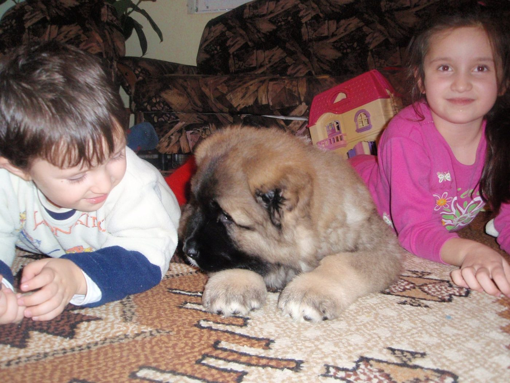

Can a Caucasian live with children?
This is one of the first questions families ask us. The answer is yes. Caucasian Shepherds are clever dogs and very rarely show aggression towards children, even unfamiliar ones. With the children of their own family they are usually calm and patient.
But the Caucasian Shepherd is a big and powerful guardian. Under the FCI standard the minimum weight is 50 kg for males and 45 kg for females. So living well together does not happen by itself. It depends on how the dog is raised, on rules for the children and on the attention of the adults.
The family's own children

A Caucasian sees its family as its own flock and guards it. The children in the house are part of that flock. That is why a dog that is wary of strangers often puts up with things from "its" children that it would allow nobody else.
It is best for the puppy to come to you young and grow up together with the children. Our puppies grow up among people, children and other animals at the kennel, so meeting a new family is not something completely unknown to them.
Size is the most common danger
Most problems come not from aggression but from size. A growing Caucasian is heavy, strong and sometimes clumsy. It can knock over a small child in play or in a happy greeting without meaning any harm at all.
- Never leave small children alone with the dog, however calm it is.
- Teach the dog not to jump up at people while it is still small. What is sweet in a puppy of a few kilos is not sweet in an adult dog.
- Do not let a child walk the dog alone. A child cannot hold a dog of 50 kg or more on a lead.
Visiting children and noisy play
This is where you need the most care. When children come to visit and start running, shouting and wrestling with yours, the dog may take the play as an attack on "its" children and step in to protect them.
- When guests bring children, keep the dog in its enclosure or in a separate part of the yard.
- Tell visiting children not to enter the yard when you are not there.
- Keep the gate and the fence closed. A Caucasian guards the yard and makes no difference between a child and an adult stranger.
Rules for the children
A good relationship is built from both sides. Teach the children to respect the dog:
- not to pull its ears, tail or coat and not to climb on it;
- not to disturb it while it eats or rests;
- not to take its food or toys;
- not to run and scream around a dog they do not know.
If the child is old enough, let them help with the care: filling the water bowl, brushing the dog together with you, watching the training. The dog accepts them more easily, and the child learns responsibility.
Male or female for a family with children?
Females are usually calmer, smaller and easier to train. So if you have small children and this is your first Caucasian, a female puppy is often the better choice. We wrote more about the differences in how to choose a puppy.
In short
A Caucasian Shepherd can be a wonderful guardian and friend for children. It will not replace adult supervision, but if you raise it well and keep a few simple rules, you will have a dog that guards your children as its own. If you are unsure, come over for a coffee at the kennel and we will talk. You will find more about the breed's temperament in our guide to the Caucasian Shepherd.
Frequently asked questions
Is a Caucasian Shepherd suitable for a family with children?
Yes, if it is raised well. Caucasians very rarely show aggression towards children and are usually calm and patient with the children of their own family. Still, it is a big and powerful dog, so small children should never be left alone with it.
How does a Caucasian behave with visiting children?
It is usually calm, but it may take the noisy play and wrestling of visiting children with yours as an attack on its own. When guests bring children, keep the dog in its enclosure or in a separate part of the yard.
Can a child walk a Caucasian Shepherd?
It is not recommended. Under the FCI standard the minimum weight of an adult dog is 45–50 kg and a child cannot hold it on a lead. Walks should be with an adult.
Is a male or a female better with small children?
Females are usually calmer, smaller and easier to train, so with small children and a first Caucasian a female puppy is often the better choice.